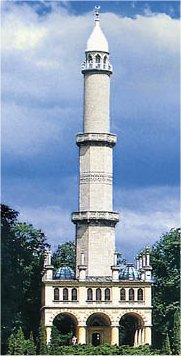
Turecká věž v Lednicko-valtickém areálu funguje jako rozhledna.
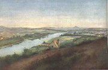
Mánes: Řipský kraj
|
ČESKÝ ROMANTISMUS
Po vypuknutí Velké francouzské revoluce zachvátil rakouské úřady strach z obdobného vývoje v habsburské monarchii. Aby se zabránilo šíření „jakobínských“ myšlenek, byla posílena cenzura a po nástupu Metternicha se Rakousko proměnilo v policejní stát. Mladí muži nesměli studovat v zahraničí, protože by zde mohli přijít do kontaktu s revolucionáři. Pečlivě se kontrolovala soukromá korespondence, jestli neobsahuje nebezpečné myšlenky. Rostla moc tajné policie, která si najímala konfidenty a nasazovala je do tajných revolučních spolků.
V Čechách ovlivnil romantismus především výtvarné umění. V novogotickém duchu byly stavěny a přestavovány hrady, zámky (Hluboká, Lednice, Kokořín...) i kostely. Sochař Václav Levý (1820-1870) tesal své obří skulptury přímo do skal (Čertovy hlavy u Liběchova). Antonín Mánes (1784-1843) se věnoval krajinomalbě.
Skutečně romantických spisovatelů u nás mnoho nebylo. Obrozenci totiž upřednostňovali výchovnou a vzdělávací funkci literatury, což bylo v přímém rozporu s romantickými ideály. Podivínství romantiků zesměšňoval Tyl (Rozervanec), Rubeš (Pan amanuensis na venku) a další současníci, kteří nechápali, proč se romantici nevěnují osvětové činnosti a proč dávají najevo svůj světobol.
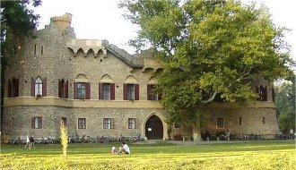
Janohrad v Lednicko-valtickém areálu byl postaven rovnou jako zřícenina...
|
Historie
Kníže Metternich byl hlavní postavou protinapoleonské koalice a vídeňského kongresu. Jako státní kancléř (1810-1848) zavedl v Rakousku policejní absolutismus. Nejvýznamnějším tajným spolkem byl Repeal. Roku 1848 vypuklo povstání ve Vídni i Praze. Do Kroměříže se přemístil sněm, který měl sestavit první ústavu, ale po porážce revoluce byl rozprášen. Jediným výdobytkem zůstalo zrušení roboty. Na rakouský trůn nastoupil císař František Josef I. (1848-1916) a ministrem vnitra se stal Alexander Bach, odtud pojem bachovský absolutismus (1849-1859).
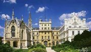
Zámek Lednice
|
Karel Hynek Mácha
(1810-1836)
Mácha se narodil v Praze a zemřel v Litoměřicích na následky střevní choroby, kterou se zřejmě nakazil, když pomáhal hasit hořící dům. Vystudoval práva. Pomáhal uprchlým revolucionářům z Polska. Za svého života vydal pouze jednu knihu – Máj (1836), několik básní a povídek – Křivoklad, Dosloví ke Křivokladu, Obrazy ze života mého (Večer na Bezdězu, Marinka). Prózy Cikáni a Pouť krkonošská zůstaly v rukopise. Vyšly posmrtně stejně jako Máchovy deníky, dopisy, zápisky z cest nebo fragmenty dramat. Mácha vnesl do české literatury hlavní romantická témata jako smrt, osudovost, rozpor mezi snem a skutečností. Nejdůležitější pro něj byl umělecký účinek jeho děl.
|
Karel Hynek Mácha: Máj
Lyrickoepická skladba Máj bývá považována za vůbec nejlepší českou báseň. Její romantický děj můžeme zrekonstruovat z několika náznaků. V 1. zpěvu čeká Jarmila na svého milého, ale když se dozví, že bude popraven za otcovraždu, skočí ze skály a utopí se v jezeře. 2. zpěv zachycuje Vilémovo rozjímání nad vlastním osudem – když ho otec vyhnal z domova, stal se vůdcem loupežníků, a když zavraždil svůdce své dívky, poznal v něm vlastního otce. 1. intermezzo se odehrává na popravišti a vystupují v něm duchové a další nadpřirozené bytosti. 3. zpěv zachycuje Vilémovu popravu. Ve 2. intermezzu naříkají loupežníci nad ztrátou svého vůdce. Ve 4. zpěvu se 7 let po popsaných událostech dostává na místo děje poutník a zamýšlí se nad tragikou lidského osudu.
Tragický děj Máje kontrastuje s nádhernou jarní přírodou, která je právě v plném rozkvětu. Mácha evokuje atmosféru pomocí zvukomalby a fascinujících básnických obrazů.
|
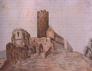
Mácha byl zručný kreslíř, talentovaný herec a zdatný chodec (došel pěšky až do Benátek, putoval po zříceninách českých hradů). Který hrad zachytil na této kresbě?
Jak na tebe působí ukázky z Máje?
Jakým způsobem Mácha evokuje patřičnou atmosféru?
Vyhledej v ukázkách lyrické a epické pasáže.
Co je přirovnání, metafora, metonymie, personifikace, epizeuxis, refrén, apostrofa, inverze a oxymóron? Najdeš je v Máchově Máji?
Nakresli ilustraci k některé z ukázek.
|
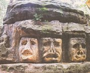
Levý: Harfenice
|
Karel Hynek Mácha: Pouť krkonošská
Pouť krkonošskou můžeme označit za první český horor. Mladý hrdina putuje ke Sněžce, na jejímž vrcholu nachází klášter, ve kterém přebývají mniši. Kromě živých a mrtvých mnichů jsou tu i mniši, kteří jednou za rok vstávají z hrobů. Nemohou sice opustit klášter, ale vidí kvetoucí jarní přírodu za jeho zdmi. Jejich postavení je natolik zoufalé, že řada z nich raději zvolí věčnou smrt. Stejnou volbu učiní i poutník...
|
Najdi v ukázce rysy romantismu.
|
Karel Sabina (1813-1877)
Sabina se narodil v Praze a zemřel v Kouřimi. Účastnil se revolučního dění (tajný spolek Repeal), ale byl zatčen a odsouzen k trestu smrti (zmírněno na 18 let žaláře). Roku 1857 byl amnestován. Když se ukázalo, že šlo o konfidenta tajné policie, byl prohlášen za zrádce národa. Zemřel v opovržení a bídě. Sabina pečoval o odkaz svého přítele Máchy – stať Úvod povahopisný a Upomínka na K.H.Máchu otištěná v almanachu Máj a vydával jeho díla. Sám napsal román Oživené hroby, prózu Hrobník, historické Obrazy ze 14. a 15. věku, pojednání Demokratická literatura nebo sbírku Básně. Proslul jako autor operních libret Prodaná nevěsta a Braniboři v Čechách.
|
Karel Sabina: Oživené hroby
V románu Oživené hroby zúročil Sabina své zkušenosti z věznění v olomoucké pevnosti, kde skončil za účast v tzv. májovém spiknutí. Ve vězeňské světnici se scházejí odsouzení demokraté různých národností – Maďar, Čech a tři Italové. Diskutují o poměrech ve věznici a o boji za svobodu. Jejich rozhovory ironicky glosuje Vídeňák Benedikt Schauberk, který se zajímá hlavně o vlastní pohodlí. Ztráta iluzí postupně postihne i ostatní. Útěk z vězení je nemožný a očekávaná amnestie se na žádného z odsouzených nevztahuje.
|
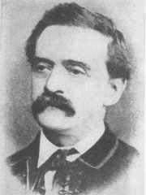
Karel Sabina
Charakterizuj postavu Benedikta Schauberka.
Jak se jmenují jeho spoluvězni?
Kdo byl profós (profous)?
|
Josef Václav Frič
(1829-1890)
Frič se narodil v Praze, kde také skonal. Po absolvování Akademického gymnázia utekl do zahraničí (Hamburk, Londýn, Paříž). Po návratu do Čech se zapojil do činnosti revolučních spolků. Za účast v tzv. májovém spiknutí (1849) skončil ve vězení (Komárno). Roku 1854 byl amnestován. Léta 1859 až 1879 strávil v emigraci (Londýn, Paříž, Petrohrad, Řím...), kde pokračoval v propagaci revolučních ideálů a české kultury (vydával časopis Svobodný hlas Čech). Je autorem básnické sbírky Písně z bašty, lyrickoepické skladby Upír a několika povídek a divadelních her. Zajímavé jsou jeho Paměti. Vydal almanach Lada Nióla.
|
Josef Václav Frič: Písně z bašty
Cyklus revolučních básní Písně z bašty psal Frič v emigraci. Tyto otevřeně protihabsburské verše mohly v Čechách vyjít až roku 1898. Editor Vrchlický k nim připojil třináct konfesijních básní, které Frič napsal během svého věznění v Komárně a nazval je Rezignace.
Z Fričových skladeb dýchá romantické přesvědčení o vlastní výlučnosti, nadšení pro revoluční ideály a zdrcení z neschopnosti je naplnit.
|
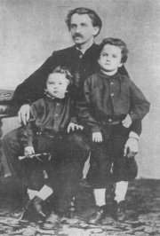
Frič se svými dětmi
Proč napsal Frič tuto báseň?
Pokus se o její interpretaci.
|
Karel Jaromír Erben
(1811-1870)
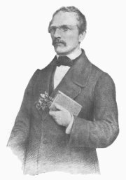
Erben se narodil v Miletíně u Jičína a zemřel v Praze. Vystudoval práva, redigoval Pražské noviny a pracoval jako archivář. Věnoval se vydávání historických pramenů, sběratelství lidové slovesnosti – Prostonárodní české písně a říkadla, Sto prostonárodních pohádek a pověstí slovanských v nářečích původních, České pohádky i umělecké tvorbě – básnická sbírka Kytice (1853).
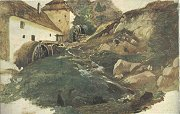
Mánes: Horský mlýn
|
Karel Jaromír Erben: Kytice z pověstí národních
Erbenova Kytice navazuje na tradice ohlasové poezie.
Balady zařazené do této básnické sbírky můžeme rozdělit na dvě skupiny. První odráží pohanské vidění světa, kdy za porušení řádu přijde krutý trest – Polednice, Vodník. Smířlivější řešení nabízí křesťanské pojetí. V těchto baladách je trest zrušen díky pokání a lítosti osoby, která řád přestoupila – Poklad, Svatební košile.
Karel Jaromír Erben: České pohádky
Při vydávání lidové slovesnosti využíval Erben postup blízký činnosti bratří Grimmů. V různých variantách pohádek hledal původní mytologické jádro.
Další autoři a díla
Václav Bolemír Nebeský: Protichůdci
Josef Jaroslav Langer: České lesy
|
Které básně jsou součástí sbírky Kytice? Je jich celkem třináct.
Které nadpřirozené bytosti vystupují v Erbenových baladách?
Vysvětli, co je balada.
K nejznámějším z Erbenových pohádek patří O třech přadlenách, Dobře tak, že je smrt na světě, Dlouhý, Široký a Bystrozraký, Tři zlaté vlasy Děda-Vševěda, Pták Ohnivák a liška Ryška, Otesánek, Zlatovláska, Jezinky, O kohoutkovi a o slepičce, Hrnéčku, vař! nebo Rozum a Štěstí. Umíš je převyprávět?
Srovnej Erbenovy pohádky s pohádkami bratří Grimmů.
|
Internetové stránky
Mácha, rozcestník
Mácha: Máj, první vydání z roku 1836
Mácha: Máj, překlad do angličtiny
Vašák: Máj
Fričova poezie
Sabina, Karel: Oživené hroby, Hrobník
Kralevic Marko, Erbenův překlad
Lednicko-valtický areál
Lednice, zámek
Lednice, zámek
Hluboká, zámek
Václav Levý, skalní sochy u Liběchova
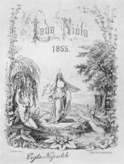
Fričův almanach Lada Nióla
|
Doporučená četba
Český romantismus v evropském kontextu, Praha 1993
Dolanský, Julius: Karel Jaromír Erben, Melantrich, Praha 1970
Erben, Karel Jaromír: Poklad, Naše vojsko, Praha 1958
Erben, K.J.: Zlatý kolovrat, Mladá fronta, Praha 1976
Frič, Josef Václav: Paměti
Frič, J.V.: Písně z bašty, Mladá fronta, Praha 1950
Hledání modrého květu, Středočeské nakladatelství, Praha 1988
Hrbata, Zdeněk: Romantismus a Čechy, H&H, Praha 1999
Intimní Karel Hynek Mácha, usp. M.Pohorský, Československý spisovatel, Praha 1993 (deníky)
Ivanov, M.: Důvěrná zpráva o Karlu Hynku Máchovi, Československý spisovatel, Praha 1977
Jirásek, Alois: Filosofská historie
Karel Hynek Mácha ve vzpomínkách současníků, usp. Karel Janský, Melantrich, Praha 1959
Křivánek, Vladimír: Karel Hynek Mácha, Horizont, Praha 1986
Literární pouť Karla Hynka Máchy, Ohlas Máchova díla v letech 1836-1858, usp. P.Vašák, Odeon, Praha 1981
Nebeský, Václav Bolemír: Protichůdci, Kamila Neumannová, Praha 1912
Otruba, Mojmír: Karel Hynek Mácha, Daleká pouť, Československý spisovatel, Praha 1976
Sabina, Karel: Oživené hroby, Československý spisovatel, Praha 1977
Spisy Karla Hynka Máchy (3 svazky), SNKLU
Štěpánek, Vladimír: Karel Hynek Mácha, Melantrich, Praha 1984
Žáček, Václav: Josef Václav Frič, Melantrich, Praha 1979
|
Připrav si referát o některé z uvedených knih nebo internetových stránek.
Tipy, filmy, exkurze
Jiří Suchý: Kytice, představení divadla Semafor (vyšlo na CD)
Kytice, režie F.A.Brabec
Otesánek, režie J.Švankmajer
Hluboká, zámek
Kokořín, zámek
Lednice, zámek
Památník K.H.Máchy, Doksy
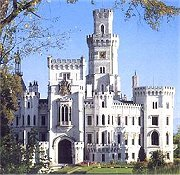
Zámek Hluboká
|
|